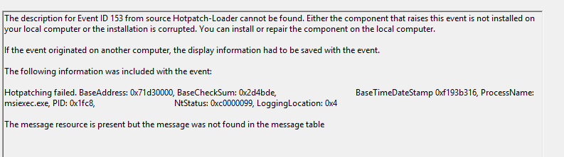
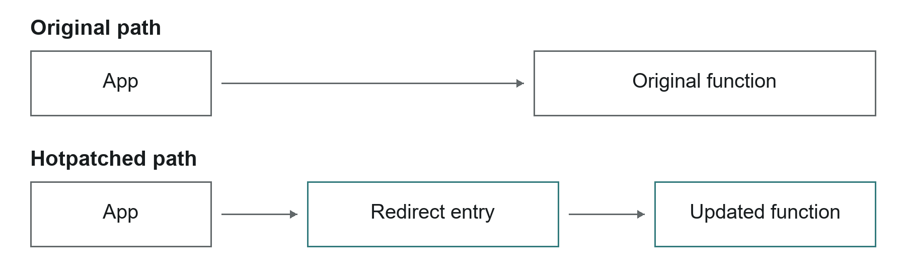
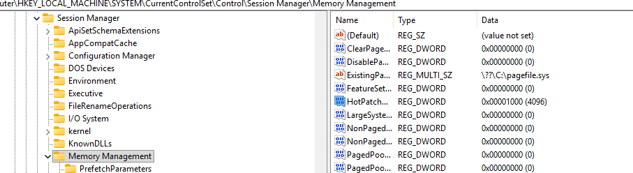
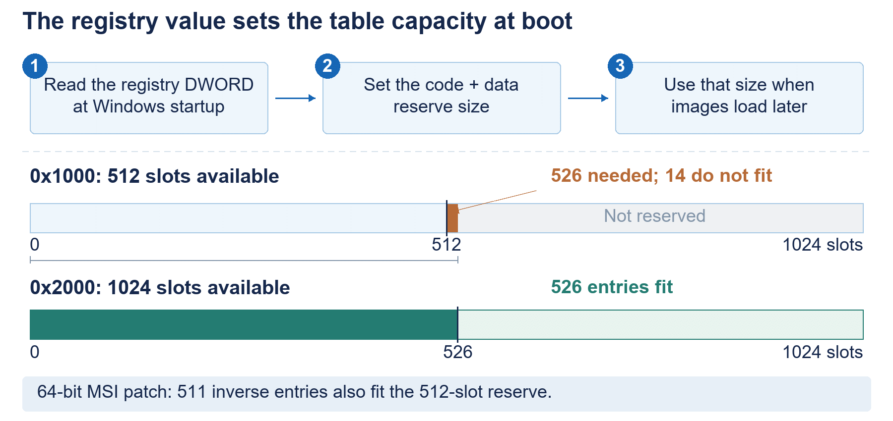
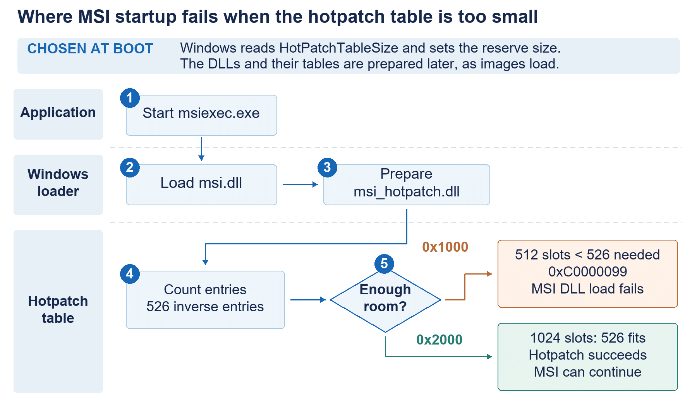
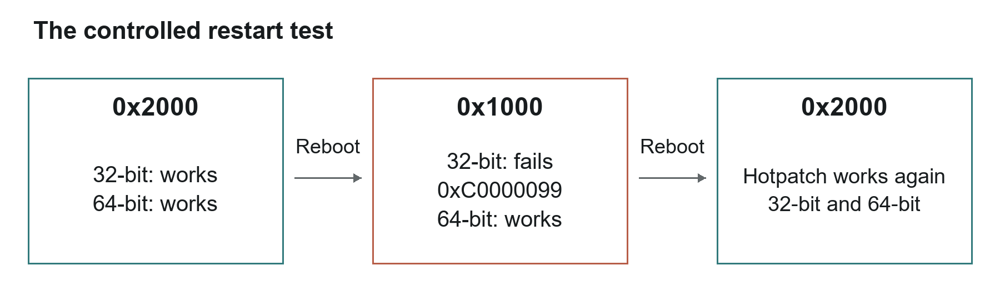

We were tagged in a conversation about Citrix installations failing after the November Windows update. Some devices were having problems, while others seemed to be fine. There was no clear explanation for the difference.
We started testing it ourselves and eventually saw the same behaviour. The installer would start, then disappear again. No useful error on screen. Even the exit code suggested that everything had completed successfully.
We wanted to know how far the installer was actually getting. We tried starting Windows Installer on its own and looked at what Windows recorded at the same time. One event in the Application log gave us a reason to look closer.
The first useful clue was in the Application log
The Application log on that failing boot included an event from a source called Hotpatch-Loader. That was a reason to look at what Windows was doing while the installer started. The name of an application in a deployment failure does not tell us which component stopped first.
In Event Viewer, the location is Windows Logs > Application. Filter for source Hotpatch-Loader and Event ID 153, then open Details > XML View. This shortened example is from the controlled test described later: Hotpatching failed

There were two leads here. Windows was reporting a hotpatch failure inside an installer process, and it supplied a status code. The checksum and timestamp also gave us a way to identify the affected Windows image. Those fields would let us match the event to a file instead of guessing from the application name.
Event Viewer can put a distracting message above these details saying the event description cannot be found. The raw failure information was still present in our event. That missing description alone did not establish that the MSI files were corrupt.
Why hotpatch was worth a closer look
This isn’t the first time I’ve written about Windows Hotpatch and the unexpected problems that can come with it. Back in November 2024, I looked at how hotpatch works and how Windows can install security updates without requiring a restart. Sounds great, right? But what happens when other parts of Windows still depend on the normal update process?
In April 2026, I wrote about exactly that. Microsoft confirmed that devices with hotpatch enabled could fail when using Reset this PC. Instead of resetting, Windows would restart back to the desktop with the message “There was a problem resetting your PC. No changes were made.”
In that same article, I also covered how Secure Boot certificate updates still depended on the normal baseline update. Hotpatch could keep Windows security fixes current, but other components still needed the regular servicing cycle. Microsoft documented a mitigation for the reset issue in KB5079471.
And now, a few months later, we have another interesting problem. This time, Windows Installer itself can fail because Windows cannot prepare the hotpatch for msi.dll.
What Windows is doing when it hotpatches code
A normal Windows update can need a restart to replace code that is already in use. Hotpatching allows supported security fixes to take effect while Windows keeps running. Windows loads updated code into memory and redirects calls from the original functions to their replacements.
A function is a small piece of code that performs a job. An application can ask a Windows DLL to do part of its work by calling one of those functions. With a hotpatch applied, that call can take a new route to the updated function.

Windows keeps these routes in a Hotpatch Address Table, or HPAT. Each entry is a small redirect telling a call where to go next. I will call an entry a slot. The updated code can also call functions that remain in the original DLL, so Windows needs routes in both directions, held in separate tables.
Hotpatch still has a servicing cycle. Baseline updates require a restart, while eligible hotpatch updates between baselines can apply without one. Some changes still depend on a normal update and reboot. Microsoft explains the current cycle and requirements.
Following the MSIEXEC installer through a trace
The Application event gave us a failure and a fingerprint. An ETL recording could show more of the surrounding activity: the process starting, the DLL loading, the patch being prepared and the result. The recordings discussed here were made during the controlled tests later in this article.
I used Logman, the recording tool included with Windows. ETL is the recording file; ETW is the Windows tracing system supplying the events. The capture required administrator access and enabled two event sources. Kernel-Mm supplied hotpatch operations and result codes. Kernel-Process supplied process starts, exits and DLL loads.
-Start a short recording
-Start fresh 32 bit and 64 bit MSI processes
-Stop recording and save the ETL
-Follow each process ID and match the DLL details
Matching the process ID with the checksum, timestamp and patch path connected the Application event to the 32-bit msi.dll and its msi_hotpatch.dll.
The recording showed hotpatch preparation fail with C0000099. Our DLL-loading probe then received a null handle. This placed the failure in the Windows DLL-loading work that the installer needs before it can install a package.
That also explains why an Intune app deployment can draw attention to the package while its child installer is failing in Windows. The Intune Management Extension service remained running during this investigation.
The error led to a size check
The status C0000099 is named STATUS_ALLOTTED_SPACE_EXCEEDED. The name suggests a space problem, but it does not identify the particular limit. I needed to connect it to the code handling this hotpatch operation.
The relevant Windows code counts the table entries a patch needs, works out the required pages, and compares that size with a reserved area. If the table would exceed the reservation, the code selects the same status we saw in the recording. The important part reads like this:
-Work out how much table space the patch needs
-Compare it with the space already reserved
-If the table would not fit stop preparing the hotpatch and return 0xC0000099
We now had a specific explanation to test. The installer needed its MSI DLL, Windows was preparing that DLL’s hotpatch, and the preparation could stop at a table-space check. The next lead was the reservation itself. Where did Windows get that amount?
The next lead was in the boot code
Following the reservation back to its starting point led into the boot loader. Windows reads a DWORD during startup and uses it to calculate the space available for hotpatch tables. The value in that read was named HotPatchTableSize.
A proposed registry workaround had already been shared with us. Finding how Windows used this setting gave that suggestion an explanation we could check. It connected the value to the same reservation involved in the failure check.
The value is stored here: HKLM\SYSTEM\CurrentControlSet\Control\Session Manager\Memory Management
Value name HotPatchTableSize
Value type REG_DWORD

The room in this case is a reserved address range associated with a DLL image. Windows uses physical memory pages as it fills the table. In the boot path examined here, it rounds the registry value up to a 4 KB boundary and doubles it for paired code and data pages. The code pages hold small jumps, and the data pages hold their destination addresses.
This also made the restart requirement understandable. The reservation size is chosen during Windows startup and used as images load later. Changing the registry in a running session does not rebuild that boot state.
Counting what the Hotpatch actually needs
The reservation explained the limit. The patch files supplied the other half of the comparison. This 32-bit MSI patch has 129 function redirects toward the updated code and 526 redirects back toward functions in the original image. Those are separate tables, so adding the two counts together would give the wrong comparison.
The table needing 526 entries exceeds a 512-slot reservation by 14. Because Windows grows these tables in paired pages, that table needs 16 KB. An 8 KB reservation cannot accommodate it. The corresponding table in the 64-bit patch needs 511 entries, which fits within 512 slots.
This was the reason to test a larger value. For these files, 0x2000 provides 1,024 slots and enough space for the 526-entry table. The trace did not print the number 526 or the registry value. Those came from checking the patch contents and the Windows sizing code. Successful ETW events showing 129 forward entries refer to the other table.

One pair of pages supports 512 slots. The two values we tested therefore gave these capacities:
Hexadecimal value | Total reserved space per image | Available slots |
|---|---|---|
0x1000 | 8 KB | 512 |
0x2000 | 16 KB | 1,024 |

Putting the explanation to the test
There was an important detail about the test PC: it already had 0x2000 and worked. That gave us a baseline, rather than an example of a device that had arrived in a broken state.
I recorded the working case, deliberately lowered the value to 0x1000, then restarted. With a short recording running, I started fresh MSI processes and a probe that only loaded MSI and read a diagnostic package. The 32-bit test used C:\Windows\SysWOW64\msiexec.exe; the 64-bit comparison used C:\Windows\System32\msiexec.exe.
The smaller-reserve boot reproduced the failure. The 32-bit DLL load failed, and the trace recorded C0000099 against the matching MSI image and patch. The 64-bit probe continued to work. Even the failing 32-bit msiexec help process returned exit code 0, which showed why the process exit code alone was a poor success test.

I restored 0x2000 and rebooted again. The kernel events showed successful MSI hotpatch operations for the same files. With tracing stopped, fresh 32-bit and 64-bit loading probes passed. Real diagnostic MSI packages then installed and uninstalled successfully for both architectures, and their temporary files were removed.
One recovery probe timed out, and the cleanup script later failed while another process was exiting. I did not count those API checks as passes. The successful kernel events and the separate installation tests established recovery. All six MSI engine, executable and hotpatch files kept their original hashes and valid Microsoft signatures.
The useful trace data came from the direct Logman recording. A supplemental Windows Performance Recorder capture contained mostly metadata and did not provide usable stacks. We matched the failure status, files and processes; we did not capture a call stack stopping at the exact size-comparison instruction.
Why an upgrade remains a possibility
The test explains how two devices with different reservations could behave differently with this patch. It does not establish how another device acquired its setting. My PC had 0x2000 before the experiment; I set the smaller value deliberately.
An older image, setup script or Windows installation could have carried a setting forward through an upgrade. To describe that as the cause on a particular PC, we would need evidence from that device, such as an earlier registry capture or setup records. Event 153 does not record the registry value or the upgrade history.
Boot state matters too. Our recovery task restored the on-disk value before we recorded the failing boot, but the running system still used the smaller reservation chosen at startup. It took the next reboot to use the restored setting. Reading 0x2000 from the registry during that failing boot would not have told the whole story.
What to check on an affected device
Start with the Application log and the actual installer process. A matching Hotpatch-Loader event, status C0000099 and MSI fingerprint justify following this lead. A different status or image needs its own investigation. Read the current registry value with PowerShell:
$memoryKey = ‘HKLM:\SYSTEM\CurrentControlSet\Control\’ +
‘Session Manager\Memory Management’
Get-ItemPropertyValue -Path $memoryKey -Name HotPatchTableSize
The output is normally decimal: 4096 means 0x1000, and 8192 means 0x2000. In Registry Editor, the tested larger setting is hexadecimal 2000. Decimal 2000 would still round to the smaller reservation in this boot path.
On the tested configuration, setting the DWORD to hexadecimal 2000 and rebooting restored MSI loading. Record the original value and validate the change on a representative device before applying it more widely. After rebooting, check a fresh installer process, a real MSI transaction and new matching events.
The lab used Windows 11 Enterprise 25H2, build 26200.9911, on Intel x64, with November hotpatch KB5132043 installed and MSI hotpatch DLL version 5.0.26100.9911. As of 19 November 2026, the Microsoft KB page listed no known issues and did not document this registry workaround. This finding does not establish that every failure after that update has the same cause, including the separate Citrix LTSR setup error seen earlier.
Fixing the HotPatchTableSize
Now that we know what caused the failure, how can we check whether another device has the same problem? And more importantly, how can we fix it without changing something that is already working?
In our tests, the problem appeared when HotPatchTableSize was set to 0x1000. That gave Windows room for 512 entries, while the 32 bit MSI hotpatch needed 526.
Increasing the value to 0x2000 gave Windows room for 1,024 entries. After restarting the device, MSI loading worked again. But that does not mean we should simply set every device to 0x2000.
If a device already has 0x2000, there is nothing to increase for this particular issue. The same applies to 0x4000, which already provides a larger reservation. Changing those values would not address the limit we reproduced.
There is also an important difference between decimal and hexadecimal values. For example, 4000 decimal is 0xFA0, which Windows rounds up to 0x1000 in the boot path we examined. That is still the smaller reservation.
Checking the current value with PowerShell
The following script first checks the existing registry value and shows it in both decimal and hexadecimal. It calculates the effective reservation using the same 4 KB rounding we observed in the Windows boot code.
If the reservation is already large enough, it does nothing. If it is too small, the script can increase the registry value to 0x2000. By default, the script only checks the configuration. Nothing is changed unless you explicitly use the -Apply parameter.
param(
[switch]$Apply
)
$path = 'HKLM:\SYSTEM\CurrentControlSet\Control\Session Manager\Memory Management'
$name = 'HotPatchTableSize'
$target = 0x2000
$key = Get-Item -Path $path -ErrorAction Stop
if ($key.GetValueNames() -notcontains $name) {
Write-Host 'HotPatchTableSize is not configured.'
Write-Host 'No changes made.'
return
}
if ($key.GetValueKind($name) -ne 'DWord') {
Write-Warning 'Unexpected registry value type.'
return
}
$current = [uint32]$key.GetValue($name)
Write-Host ("Current value: {0} decimal (0x{0:X})" -f $current)
if ($current -eq 0) {
Write-Warning 'Unexpected zero value. No changes made.'
return
}
# Windows rounds the value up to a 4 KB boundary
$effective = [uint64]([math]::Ceiling($current / 4096.0) * 4096)
Write-Host ("Effective value: 0x{0:X}" -f $effective)
if ($effective -ge $target) {
Write-Host 'Reservation already meets the tested minimum.'
Write-Host 'No changes required.'
return
}
if (-not $Apply) {
Write-Host 'Reservation is below the tested minimum.'
Write-Host 'Run with -Apply to update it to 0x2000.'
return
}
# Save the original value before changing it
$backupFolder = Join-Path $env:ProgramData 'HotPatchBackup'
New-Item -Path $backupFolder -ItemType Directory -Force | Out-Null
$backupFile = Join-Path $backupFolder (
'HotPatchTableSize_{0}.json' -f (Get-Date -Format 'yyyyMMdd_HHmmss_fffffff')
)
[pscustomobject]@{
OriginalDecimal = $current
OriginalHex = ('0x{0:X}' -f $current)
ComputerName = $env:COMPUTERNAME
Date = (Get-Date).ToString('o')
} | ConvertTo-Json | Set-Content -Path $backupFile -ErrorAction Stop
# Update the registry
New-ItemProperty -Path $path -Name $name `
-Value $target -PropertyType DWord `
-Force -ErrorAction Stop | Out-Null
Write-Host 'HotPatchTableSize updated to 0x2000.'
Write-Host "Original value saved to: $backupFile"
Write-Host 'Restart Windows for the change to take effect.'What happens after changing it?
A restart is required. Windows determines the reservation during startup, so changing the registry alone does not change the reservation already in use.
After restarting, test the affected MSI installation again. Check for new Hotpatch Loader events with status 0xC0000099 and confirm whether the installation succeeds.
If the reservation was already 0x2000 or larger and the same failure still occurs, increasing this value further is not something our tests support. At that point, we need to examine the actual hotpatch failure rather than assume the table is still too small.
This workaround was validated for the specific MSI hotpatch failure we reproduced. It should not be treated as a general fix for every Windows Installer failure.